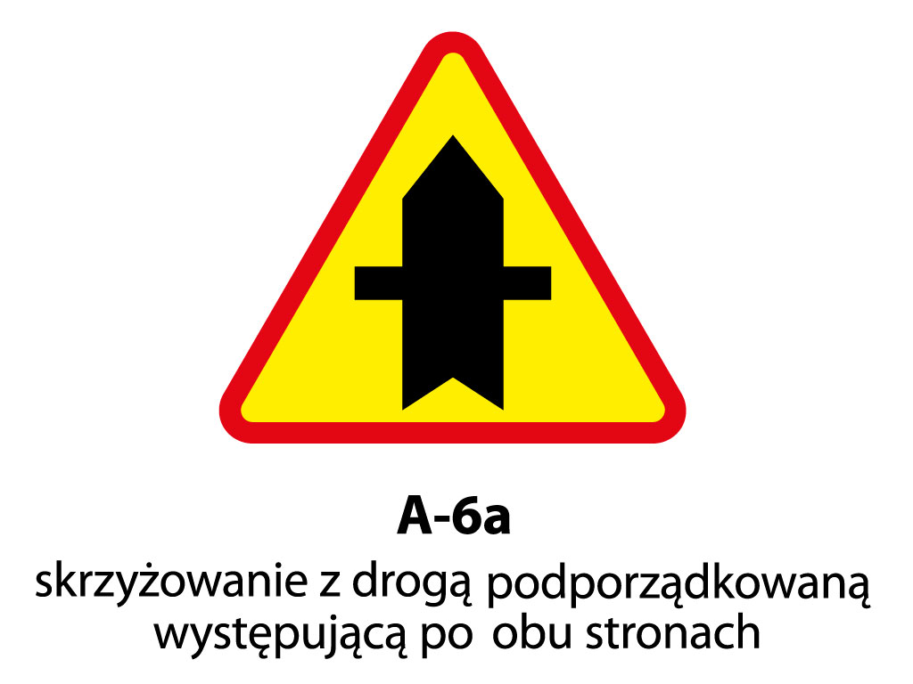
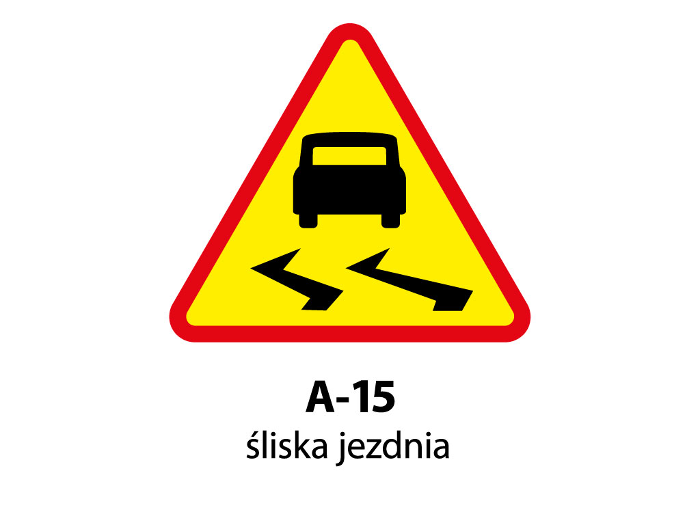
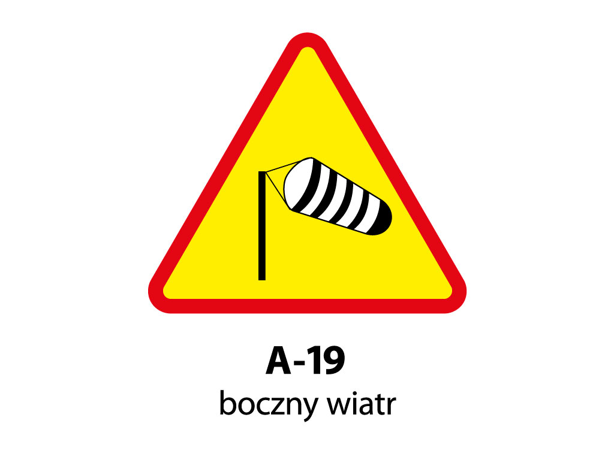
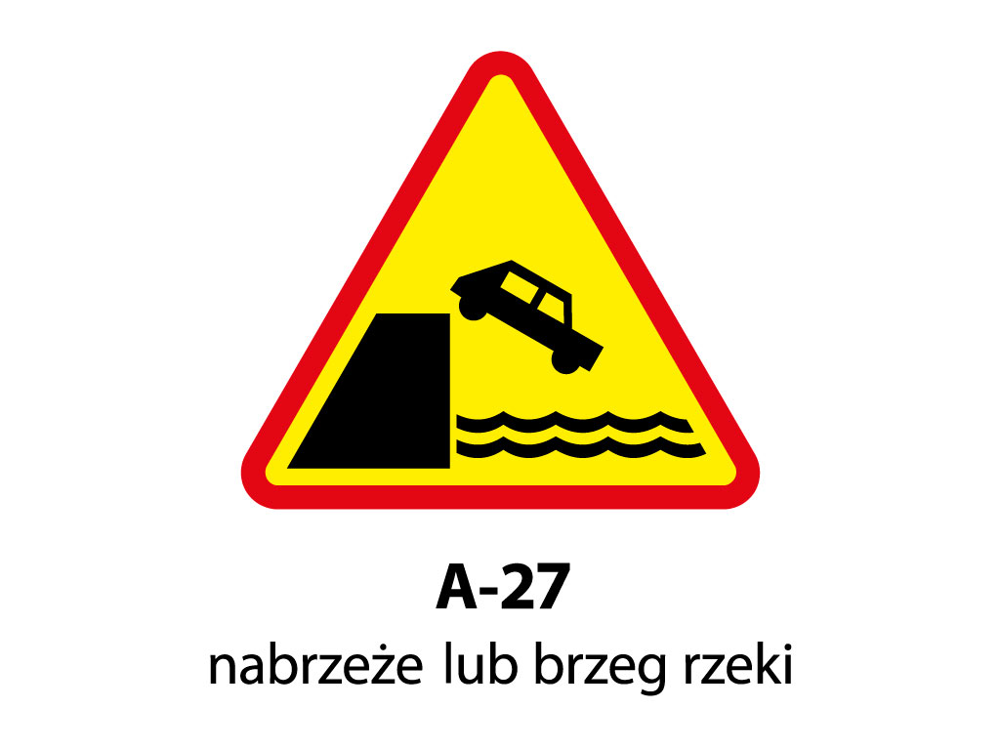
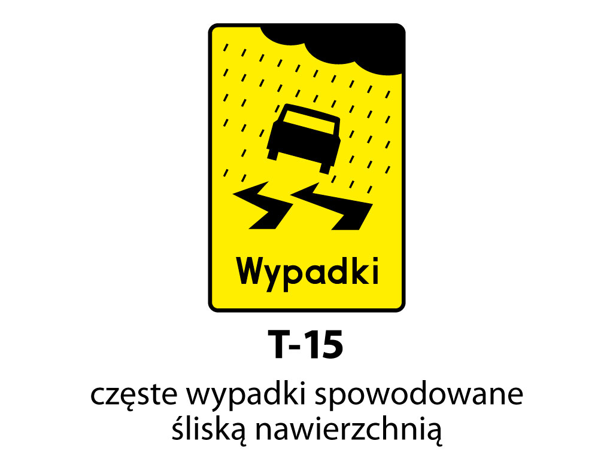

Znaki Drogowe
Znaki Ostrzegawcze
Naciśnij "spacje" aby przejść do następnego slajdu.
Naciśnij "Esc" żeby zobaczyć wszystkie slajdy.
Naciśnij "F" aby przejść do pełnego ekranu.
Znaki ostrzegawcze uprzedzają o miejscach na drodze, w których występuje lub może występować niebezpieczeństwo oraz zobowiązują uczestników ruchu do zachowania szczególnej ostrożności.
Odległość znaku ostrzegawczego od miejsca niebezpieczeństwa jest zależna od warunków
lokalnych. Na drogach o dopuszczalnej prędkości powyżej 60 km/h odległość ta wynosi od 150 do
300 m, a na pozostałych drogach - do 100 m.
Wymienione odległości nie dotyczą znaku ustąp pierwszeństwa przejazdu, który umieszczony
jest w odległości do 50 m od skrzyżowania na drogach o dopuszczalnej prędkości powyżej 60 km/h
oraz do 25 m od skrzyżowania na pozostałych drogach. Jeżeli znak ten jest użyty w celu poprzedzenia
takiego samego znaku lub znaku stop, to rzeczywistą odległość określa napis na tabliczce T-
1 umieszczonej pod znakiem.
Powrót do pierwszego slajdu.
Jeżeli na drodze o dopuszczalnej prędkości powyżej 60 km/h odległość znaku od miejsca niebezpiecznego wynosi mniej niż 150 m, odległość tę określa napis na tabliczce T-1 umieszczonej pod znakiem.
Jeżeli na odcinku drogi przekraczającym 500 m, występuje niebezpieczeństwo powtarzające
się o którym ostrzega nas znak, to pod tym znakiem ostrzegawczym jest umieszczana tabliczka T-2
określająca długość tego odcinka drogi. Koniec takiego odcinka drogi jest oznaczony takim samym
znakiem z umieszczoną pod nim tabliczką T-3 z napisem Koniec. Jako przykład może posłużyć
zastosowanie tabliczki informującej o długości odcinka drogi, na którym powtarzają się
niebezpieczeństwa, związane w szczególności z takimi znakami jak: niebezpieczne zakręty, sypki
żwir, spadające odłamki skalne.
Wymienione odległości nie dotyczą znaku ustąp pierwszeństwa przejazdu, który umieszczony
jest w odległości do 50 m od skrzyżowania na drogach o dopuszczalnej prędkości powyżej 60 km/h
oraz do 25 m od skrzyżowania na pozostałych drogach. Jeżeli znak ten jest użyty w celu poprzedzenia
takiego samego znaku lub znaku stop, to rzeczywistą odległość określa napis na tabliczce T-
1 umieszczonej pod znakiem.
Powrót do pierwszego slajdu.
T-1
Tabliczka wskazująca odległość znaku ostrzegawczego od miejsca niebezpiecznego
Powrót do pierwszego slajdu.
T-2
Tabliczka wskazująca długość odcinka drogi, na którym powtarza się lub występuje niebezpieczeństwo
Powrót do pierwszego slajdu.
T-3
Tabliczka wskazująca koniec odcinka, na którym powtarza się lub występuje niebezpieczeństwo.
Powrót do pierwszego slajdu.
A-1
Ostrzega o zbliżaniu się do jednego niebezpiecznego zakrętu w prawo.
Powrót do pierwszego slajdu.
A-2
Ostrzega o zbliżaniu się do jednego niebezpiecznego zakrętu w lewo.
Nigdzie nie jest napisane czy te zakręty mają 30° czy 90°, to okaże się na zakręcie!
Powrót do pierwszego slajdu.
A-3
Ostrzega o zbliżaniu się dwóch niebezpiecznych zakrętów, z których pierwszy będzie w prawo.
Zakręt drugi może być zarówno w prawo jak i w lewo.
Powrót do pierwszego slajdu.
A-4

Ostrzega o zbliżaniu się dwóch niebezpiecznych zakrętów, z których pierwszy będzie w lewo.
Zakręt drugi może być zarówno w lewo jak i w prawo.
Powrót do pierwszego slajdu.
T-4
Tabliczka wskazująca liczbę zakrętów
W przypadku występowania więcej niż dwóch zakrętów, pod znakiem A-3 lub A-4 podana jest
ich liczba na tabliczce T-4.
Powrót do pierwszego slajdu.
T-5
Tabliczka wskazująca początek drogi krętej
W przypadku długiego odcinka drogi
na którym występują zakręty zastosujemy tabliczkę T-2. Koniec takiego odcinka tak jak odcinków
oznaczonych na tabliczce T-4 i T-5 jest oznaczony przez powtórzenie znaku ostrzegawczego wraz z
tabliczką Koniec.
Powrót do pierwszego slajdu.
UWAGA !
Zbliżając się do miejsc oznaczonych znakami ostrzegawczymi o niebezpiecznych zakrętach, należy pamiętać, że widoczność drogi w tych miejscach jest ograniczona. Z tego powodu, oprócz zachowania szczególnej ostrożności i zmniejszenia prędkości pojazdu do bezpiecznej, kierujący powinien jechać możliwie jak najbliżej prawej krawędzi jezdni.
Powrót do pierwszego slajdu.
A-5
Ostrzega o skrzyżowaniu dróg na którym pierwszeństwo
przejazdu jest określone przepisami ruchu drogowego.
Na takim skrzyżowaniu pierwszeństwo
przejazdu mają pojazdy nadjeżdżające z prawej strony. Nazywa się ono potocznie skrzyżowaniem dróg równorzędnych.
Powrót do pierwszego slajdu.
A-6a

Skrzyżowanie z drogą podporządkowaną występującą po obu stronach.
Ostrzega o
zbliżaniu się do skrzyżowania z drogą podporządkowaną występującą po obu stronach drogi z
pierwszeństwem przejazdu.
Grubsza linia na znaku pokazuje nam, która to jest droga z
pierwszeństwem. Widząc jeden z takich znaków wiemy, że poruszamy się po linii grubszej w górę.
Powrót do pierwszego slajdu.
A-6b
Skrzyżowanie z drogą podporządkowaną występującą z prawej strony.
Ostrzega o
zbliżaniu się do skrzyżowania z drogą podporządkowaną występującą z prawej strony drogi z
pierwszeństwem przejazdu.
Powrót do pierwszego slajdu.
A-6c
Skrzyżowanie z drogą podporządkowaną występującą z lewej strony.
Ostrzega o
zbliżaniu się do skrzyżowania z drogą podporządkowaną występującą z lewej strony drogi z
pierwszeństwem przejazdu.
Powrót do pierwszego slajdu.
A-6d
Wlot drogi jednokierunkowej z prawej strony.
ostrzega o zbliżaniu się do
skrzyżowania, na którym droga z pierwszeństwem przejazdu łączy się
z wlotem drogi podporządkowanej jednokierunkowej z prawej strony.
Powrót do pierwszego slajdu.
A-6e
Wlot drogi jednokierunkowej z lewej strony.
Ostrzega o zbliżaniu się do
skrzyżowania, na którym droga z pierwszeństwem przejazdu łączy się
z wlotem drogi podporządkowanej jednokierunkowej z lewej strony.
Powrót do pierwszego slajdu.
UWAGA !
Znaki A-6d i A-6e informują nas o możliwości nagłego pojawienia się na sąsiednim lub naszym pasie nowego, włączającego się do ruchu pojazdu.
Powrót do pierwszego slajdu.
A-7
Ustąp pierwszeństwa przejazdu.
Ostrzega nas o skrzyżowaniu
z drogą, która ma przed nami pierwszeństwo przejazdu. Oznacza to, że kierujący pojazdem zbliżający
się do skrzyżowania (również tramwaj), na którym znak taki ustawiono, obowiązany jest ustąpić
pierwszeństwa przejazdu pojazdom zbliżającym się drogą z pierwszeństwem przejazdu.
Powrót do pierwszego slajdu.
UWAGA !
Jeżeli droga z pierwszeństwem zmienia kierunek przejazdu przez skrzyżowanie, wtedy umieszcza się pod znakiem tabliczkę wskazującą przebieg drogi z pierwszeństwem przejazdu T-6a i T-6c. Grube linie oznaczają drogę z pierwszeństwem przejazdu na skrzyżowaniu. Linia wychodząca z dołu znaku do środka skrzyżowania mówi nam, z jakiej drogi wjeżdżamy na takie skrzyżowanie.
Powrót do pierwszego slajdu.
A-8
Skrzyżowanie o ruchu okrężnym.
Ostrzega o zbliżaniu się do skrzyżowania dróg, na
którym ruch odbywa się dookoła wyspy w kierunku wskazanym na znaku.
Powrót do pierwszego slajdu.
A-9
Przejazd kolejowy z zaporami.
Ostrzega o zbliżaniu się do przejazdu kolejowego
wyposażonego w zapory lub pół zapory.
Powrót do pierwszego slajdu.
A-10
Przejazd kolejowy bez zapór.
Ostrzega o zbliżaniu się do przejazdu kolejowego nie
wyposażonego w zapory ani pół zapory.
Powrót do pierwszego slajdu.
UWAGA !
Łącznie ze znakami A-9 i A-10 jako uzupełnienie występują: Słupki wskaźnikowe umieszczone
po prawej stronie drogi G-1a, G-1b, G-1c, po lewej stronie drogi G-1d, G-1e, G-1f.
Pod tarczą znaku
ostrzegawczego umieszczony jest słupek z trzema kreskami, słupek z dwiema kreskami - na 2/3
odległości znaku od przejazdu, a słupek z jedną kreską - na 1/3 odległości znaku od przejazdu. Słupki
z trzema i dwoma kreskami mogą nie być stosowane, wtedy stosuje się słupek z jedną kreską pod
tarczą znaku ostrzegawczego.
Powrót do pierwszego slajdu.
G-2
Sieć pod napięciem.
Jest Umieszczony gdy nad przejazdem kolejowym jest
zawieszona sieć trakcyjna pod wysokim napięciem.
Powrót do pierwszego slajdu.
G-3 i G-4
Znak krzyż św. Andrzeja G-3 oznacza linię kolejową jednotorową, a znak G-4 linię kolejową o
dwóch lub więcej torach.
Każdy z nich jest umieszczony w bezpośrednim sąsiedztwie przejazdu
kolejowego bez zapór lub pół zapór. Znaki te wskazują także miejsce zatrzymania się pojazdu w
związku
z nadjeżdżającym pociągiem.
Powrót do pierwszego slajdu.
A-11
Nierówna droga.
Ostrzega o poprzecznej lub innej nierówności jezdni utrudniającej
ruch (poprzeczny ściek lub garb).
Powrót do pierwszego slajdu.
A-11a
Próg zwalniający.
Ostrzega o występowaniu na drodze położonej w obszarze
zabudowanym urządzenia technicznego w formie przeszkody umieszczonej na jezdni w celu
spowolnienia ruchu pojazdów; może być umieszczony wraz ze znakiem ograniczającym prędkość,
przy której następuje łagodny przejazd przez próg zwalniający.
Powrót do pierwszego slajdu.
UWAGA !
Znaki ostrzegawcze uprzedzające o zwężeniu jezdni.
Zależnie od rodzaju zwężenia, kierujący pojazdem musi być przygotowany bądź na konieczność
zmiany pasa ruchu w lewo, jeżeli zwężenie występuje
z prawej strony, bądź na przerwanie lub niepodejmowanie manewru wyprzedzania, jeżeli zwężenie
występuje z lewej strony. Możliwe jest również zatrzymanie pojazdu w związku z np.: zamknięciem
całego pasa ruchu.
Powrót do pierwszego slajdu.
A-12a

Oznacza zwężenie dwustronne jezdni.
Powrót do pierwszego slajdu.
A-12b
Zwężenie prawostronne jezdni.
Powrót do pierwszego slajdu.
A-12c
Zwężenie lewostronne jezdni.
Powrót do pierwszego slajdu.
A-13
Ruchomy most.
Ostrzega o wjeździe na most zwodzony lub obrotowy.
Powrót do pierwszego slajdu.
A-14
Roboty na drodze.
Ostrzega o prowadzonych na drodze robotach.
Należy pamiętać
o zachowaniu bezpiecznego odstępu, znacznym zmniejszeniu prędkości oraz zachowaniu szczególnej
ostrożności podczas omijania pracujących osób.
Powrót do pierwszego slajdu.
A-15

Śliska jezdnia.
Ostrzega o śliskości jezdni spowodowanej zmianą jej nawierzchni,
stałym lub okresowym zawilgoceniem lub innymi przyczynami, których kierujący nie może się
spodziewać.
Znak ten nie ostrzega przed śliskością spowodowaną śniegiem, gołoledzią deszczem lub
innymi zanieczyszczeniami jezdni.
Powrót do pierwszego slajdu.
A-16
Przejście dla pieszych.
Ostrzega o przejściu dla pieszych, które może nie być
zawczasu widoczne dla kierujących pojazdami. Pieszy znaj-dujący się na przejściu dla pieszych ma
pierwszeństwo przed kierującymi pojazdami.
Powrót do pierwszego slajdu.
A-17
Dzieci.
Ostrzega o miejscu na drodze szczególnie uczęszczanym przez dzieci lub
bliskości takiego miejsca. Znak ten będzie ustawiony przed szkołami, placami zabaw, itp. Kierujący
powinien zachować szczególną ostrożność licząc się z nieoczekiwanym wtargnięciem dziecka na
jezdnię.
Powrót do pierwszego slajdu.
A-18a
Zwierzęta gospodarskie.
Znak ten ustawia się na odcinkach dróg, przez które przeganiane są
często zwierzęta domowe - np. w pobliżu pastwisk.
Powrót do pierwszego slajdu.
A-18a
Zwierzęta gospodarskie.
Znak ten ustawia się na odcinkach dróg, przez które przeganiane są
często zwierzęta domowe - np. w pobliżu pastwisk.
Powrót do pierwszego slajdu.
A-18b
Zwierzęta dzikie.
Widząc ten znak można spotkać na drodze zwierzęta żyjące w lasach.
Kierujący pojazdem musi być przygotowany na nagłe spot-kanie zwierząt leśnych (przebieganie przez
jezdnię), taki kontakt np. z dzikiem może być bardzo niebezpieczny w trakcie jazdy z dużą prędkością,
dla kierującego pojazdem.
Powrót do pierwszego slajdu.
A-19

Boczny wiatr.
Ostrzega o miejscach, w których mogą występować silne boczne
podmuchy wiatru (np. na mostach, przy wyjeżdżaniu z lasu). Znak ten informuje kierującego
pojazdem, że zawsze powinien być przygotowany, lecz nie oznacza to, że zawsze występują silne
podmuchy wiatru. Znak ten nie mówi również,
z którego kierunku będzie wiało.
Powrót do pierwszego slajdu.
A-20
Odcinek jezdni o ruchu dwukierunkowym.
Ostrzega jadących jezdnią
jednokierunkową o miejscu, w którym rozpoczyna się ruch dwukierunkowy. Znak ten stosowany jest
w sytuacjach, gdy jedna z jezdni zostaje zamknięta dla ruchu, i ruch ten odbywa się jezdnią sąsiednią
(np. remont wiaduktu).
Powrót do pierwszego slajdu.
A-21
Tramwaj.
Ostrzega o niebezpiecznym przejeździe przez tory tramwajowe lub tory
kolei dojazdowych kursujących również po skrzyżowaniach dróg publicznych.
Powrót do pierwszego slajdu.
A-22
Niebiezpieczny zjazd.
Ostrzega o znacznym spadku podłużnym drogi. Wskazane jest
przede wszystkim utrzymanie takiej prędkości, aby w końcowej fazie spadku pojazd nie rozpędził się
na tyle, że panowanie nad nim,
a zwłaszcza hamowanie mogło stwarzać kierowcy jakikolwiek problem.
Powrót do pierwszego slajdu.
A-23
Stromy podjazd
Ostrzega o znacznym wzniesieniu drogi. Należy pamiętać przed
podjazdem, zwłaszcza w zimie, o redukcji biegu na taki, jakim będzie można pokonać cały podjazd.
Powrót do pierwszego slajdu.
UWAGA !
T-9
Pod znakami (A-22 i A-23) może być umieszczona tabliczka T-9 wskazująca rzeczywiste
pochylenie podłużne drogi. (1m^ na 100 m> = 1%)
Powrót do pierwszego slajdu.
A-24
Rowerzyści.
Ostrzega o miejscu, w którym rowerzyści wyjeżdżają na drogę lub
przez nią przejeżdżają.
Powrót do pierwszego slajdu.
A-25
Spadające odłamki skalne.
Ostrzega o możliwości spadania odłamków skalnych.
Powrót do pierwszego slajdu.
A-26
Lotnisko.
Ostrzega o nisko przelatujących samolotach.
Powrót do pierwszego slajdu.
A-27

Nabrzeże lub brzeg rzeki.
Ostrzeżenie o odcinku drogi prowadzącym bezpośrednio
do nabrzeża lub wzdłuż rzeki.
Powrót do pierwszego slajdu.
A-28
Sypki żwir.
Ostrzega o odcinku drogi pokrytej żwirem (grysem), który może być
wyrzucany spod kół jadących pojazdów i uszkodzić lakier innego pojazdu lub jakąś część ciała
pieszego.
Powrót do pierwszego slajdu.
A-29
Sygnały świetlne.
Ostrzega o miejscu, w którym ruch jest kierowany za pomocą
sygnalizacji świetlnej (np. po długim odcinku trasy za zakrętem napotkamy skrzyżowanie z ruchem
kierowanym).
Powrót do pierwszego slajdu.
A-30
Inne niebezpieczeństwa.
Ostrzega o niebezpieczeństwie innego rodzaju niż
określone pozostałymi znakami ostrzegawczymi. Umieszczona pod znakiem A-30 tabliczka, wskazuje
rodzaj niebezpieczeństwa za pomocą symbolu lub napisu.
Powrót do pierwszego slajdu.
T-8
Ruch pojazdu skierowany na tory tramwajowe.
Ostrzega o pasie ruchu skierowanym na tory tramwajowe.
Powrót do pierwszego slajdu.
T-10
Bocznica kolejowa lub tor o podobnym charakterze.
Ostrzega o skrzyżowaniu drogi z bocznicą kolejową lub torem o podobnym
charakterze; gdzie ruch wstrzymywany jest przez pracownika kolei podczas przejazdu pociągu.
Powrót do pierwszego slajdu.
T-11
Przeprawa promowa.
Ostrzega o przeprawie promowej.
Powrót do pierwszego slajdu.
T-12
Podłużny uskok nawierzchni.
Ostrzega o podłużnym uskoku nawierzchni wskutek okresowego przerwania robót
drogowych lub podczas trwania takich robót.
Powrót do pierwszego slajdu.
T-13
Deformacja nawierzchni w postaci kolein.
Ostrzega o występujących na drodze koleinach; przy tym znaku może być umieszczona
dodatkowa tabliczka podająca długość odcinka drogi, na którym koleiny występują.
Powrót do pierwszego slajdu.
T-14
Częste wypadki o charakterze wskazanym na tabliczce.
Ostrzega o miejscu częstych wypadków o charakterze wskazanym na tabliczce.
Powrót do pierwszego slajdu.
T-15

Częste wypadki spowodowane śliską nawierzchnią.
Ostrzega o miejscu częstych wypadków, spowodowanych śliską nawierzchnią jezdni
występującą w czasie lub po opadach deszczu.
Powrót do pierwszego slajdu.
T-16
Miejsce wyjazdu pojazdu uprzywilejowanego.
Ostrzega o miejscu, w którym na drogę wyjeżdżają pojazdy uprzywilejowane.
Powrót do pierwszego slajdu.
T-17
Granica państwa.
Ostrzega o miejscu, w którym droga przecina granicę państwa.
Powrót do pierwszego slajdu.
T-18
Zmiana kierunku ruchu o przebiegu wskazanym na tablicy.
Ostrzega o niebezpieczeństwie, zmianie przebiegu drogi lub kierunku ruchu w prawo
lub lewo.
Powrót do pierwszego slajdu.
T-19
Malowanie znaków poziomych.
Ostrzega o malowaniu znaków poziomych.
Powrót do pierwszego slajdu.
A-31
Niebezpieczne pobocze.
Ostrzega o niebezpiecznym poboczu (miękkim lub
obniżonym). W przypadku konieczności ostrzeżenia o niebezpiecznym podłożu występującym po
lewej stronie drogi stosuje się ten znak z odwróconym symbolem.
Powrót do pierwszego slajdu.
A-32
Oszronienie jezdni.
Ostrzega o mogącym występować na drodze oszronieniu jezdni
lub gołoledzi, co oznacza śliską nawierzchnię drogi.
Powrót do pierwszego slajdu.
A-33
Zator drogowy.
Ostrzega o miejscu,w którym występują często sytuacje
zablokowania ruchu (korki).
Powrót do pierwszego slajdu.
A-34
Wypadek drogowy.
Ostrzega o miejscu, w którym na skutek wypadku drogowego
nastąpiło zablokowanie drogi lub znaczne utrudnienie ruchu pojazdów.
Powrót do pierwszego slajdu.
Koniec
Powrót do pierwszego slajdu.